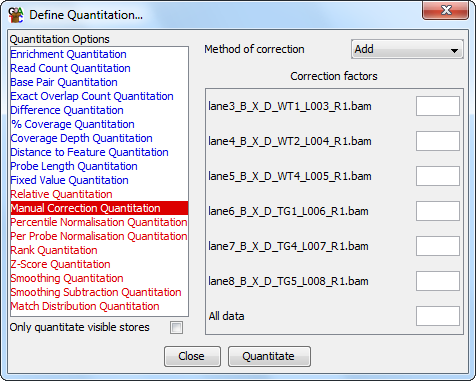

In some cases it will make sense to adjust your quantitation by a factor which can't be calculated from within SeqMonk. You may have other experimental data from outside the sequencing experiment which you want to use to correct your quantitated values.

The manual correction quantitation allows you to adjust some or all of your quantiations by supplying a user-defined correction factor for your data.